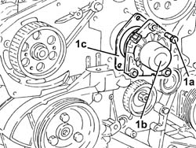
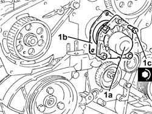

1088C14 WATER PUMP - R.R. REFITTING WITH TIMING BELT REMOVED
- Path
- Procedures > 10 ENGINE > 1088 ENGINE COOLING > 1088C WATER PUMP AND THERMOSTAT > 1088C14 WATER PUMP - R.R. REFITTING WITH TIMING BELT REMOVED
- Kind
- repair procedure (removal / refitting; the operation number is the code)
- Applies to
- engines: 2.4 JTD 20V; all production periods
- Interactive page
- https://sloeber94.github.io/elrnDB-lThss/en/#/850974
Applies to: engines: 2.4 JTD 20V; all production periods
 Removing
Removing
 Refitting
Refitting- Disconnect the lower sleeve from the radiator and drain the engine coolant.
1. Undo the bolts (1a) and remove the coolant pump (1b) complete with gasket (1c).

Applies to: engines: 2.4 JTD 20V; all production periods
Refitting
Removing1. Fit the water pump (1a), complete with a new O-Ring (1b) and tighten the bolts (1c) to the recommended torque.
 | Value - daNm | Fastening | Component | Ø |
|---|---|---|---|---|
1c | 2.5 | Bolt | COOLANT PUMP | M8 |

Applies to: engines: 2.4 JTD 20V; all production periods
- Restore the engine cooling system as described in the specific operation: